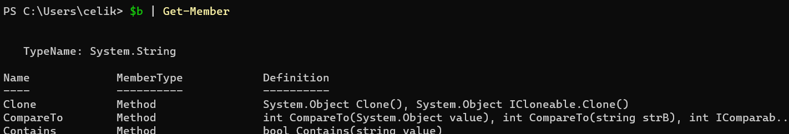
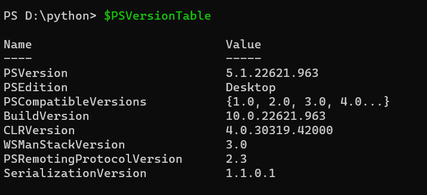

Powershell üzerinde tanımlanan değerler “OBJE” olarak kaydedilirler.
**dir | Get-Member : Komutu ile bir directory üzerinde kullanabileceğimiz metodları görebiliriz. Ayrıca tanımlanmış bir variable'ın ne türde olduğunu görmek için de kullanılabilir.

-------------------------------------------------------------------------------------------------------------------------------------------------------------------------------------------------------------
**$var_name : Variable tanımlamak istediğinde başına dolar işaretini koy.
$a = 1+2 → Tanımlamayı yapar.
$a → Bu şekilde yazarsan da değerini görürsün
STRING TANIMLARKEN:
$a = ‘This is string’
$a = ‘This is string’
$a = ‘Burc’
$b = “Sikerler $a” → Bunun sonucundan ekrana Sikerler Burç yazar.
KARŞILAŞTIRMA:
$a = 3
$b = 4
$a -eq $b
$a -ne $b
-eq = equal
-ceq = büyük küçük harf karşılaştırırken.
‘B’ ceq ‘A’ : True
-like = benzetme:
‘Apple’ -like ‘A*’ → True: Kelme ‘A’ harfi ile başlıyor mu?
‘Apple’ -like ‘*p’ → Apple kelmesinde p harfi var mı?
‘Apple’ -like ‘A??le’ → Direkt olarak bu düzeni içeriyor mu?
-ne = not equal
-gt = greater than
-lt = less than
-match: Substring arar!:
‘My name is burc’ -match ‘burc’ → True
‘My name is burc’ -cmatch ‘Burc’ → false. -cmatch case sensitive okur.
----------------------------------------------------------------------------------------------------------------------------------------------------------------------------
CMDLET: Spesifik olarak powershell için yaratılmış komutlar listesidir.
Get-Process: Çalışan processleri gösterir.
Get-Service: Tahmin et neyi getiriyor?
write-host “Bir Cümle”: Konsol ekranına tırnak içerisinde yer alan şeyi basar.
-------------------------------------------------------------------------------------------------------------------------------------------------------------------------------
ALIASES: Linux'de olduğu gibi Alias tanımlanabilir.
Get-Alias (komut): Girilen komutun alias tanımlamasını getirir. Mesela ls komutu powershell içerisinde default olarak tanımlanmış durumda.
Set-Alias: Kendi Alias'ımızı tanımlamak için ilk kullanılan komut. Akabinde prompt açılıp bize 'name' ve 'value' değerlerini soruyor. buralara değerleri girdikten sonra devam edebiliriz.
-------------------------------------------------------------------------------------------------------------------------------------------------------------------------------------
HELP: Yararlı parametreleri olan, yararlı bir komut
help (ne hakkında yardım istiyorsan) -online: parametresiyle microsoft'un kendi sitesinden yardım alabiliyorsun.
----------------------------------------------------------------------------------
VERSION CHECK:
$PSVersionTable
-----------------------------------------------------------------------------------